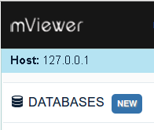
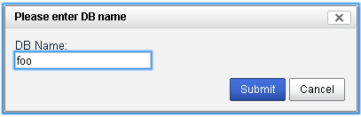
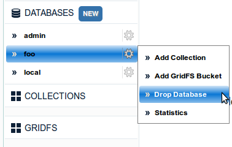
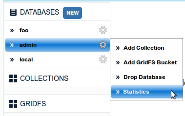

You can add a new database by clicking on "New" button next to Databases on the left sidebar
Enter the new database name and click submit.
Hover on the database name to see a menu appear. Click on Drop Database from the menu as shown below.
Click Yes on the confirmation alert to delete the database. The database will be deleted and a confirmation of successful database deletion will be shown mentioning a page reload.
Just click on the database name to view the statistics. Alternatively, you can hover on the database name and click Statistics from the menu as shown below.
